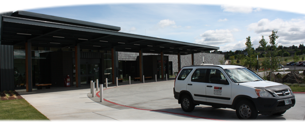

Healthcare

St. Anthony Hospital
Quality healthcare options are the cornerstone of any healthy community. St. Anthony Hospital in Pendleton recently completed a brand new 103,000 square foot, $70 million dollar facility. Offering a full range of inpatient, outpatient and emergency services the hospital serves as the medical hub of northeast Oregon. St. Anthony also operates a walk-in clinic with convenient hours for less serious medical problems. In addition to St. Anthony hospital, Pendleton is home to a host of private medical offices, specialty clinics, and pharmacies.
Emergency Services
The Umatilla Tribal Fire Department is located just 2.5 miles from Coyote Business Park, providing ambulance and paramedic services to the park.